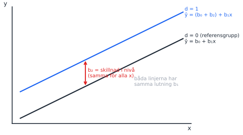
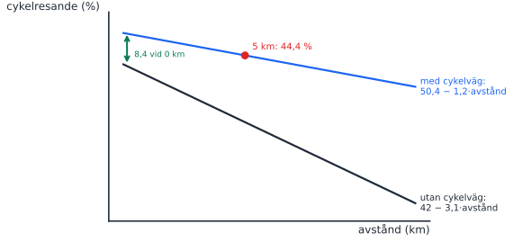
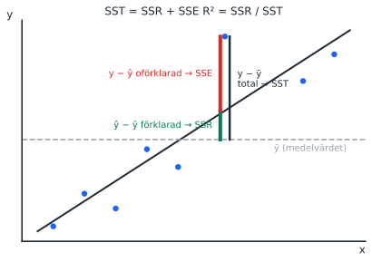
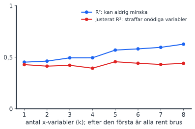

Pass 3: Dummyvariabler, goodness of fit, signifikanstest
Torsdag 15 oktober 2026, 13:00–15:00
Tre föreläsningar sedan förra passet, så det här är det tyngsta passet. Bygg upp det i samma ordning som föreläsningarna: först vad en dummy gör med linjen, sedan hur bra modellen passar (R²), sist hur vi testar koefficienterna. Excelutskriften (uppgift 2) knyter ihop allt och är den viktigaste tentafrågetypen i kursen.
Föreläsning
Datum
Tema
Kapitel (5:e uppl.)
Teman enligt kursplanen
F3
tis 6 okt
Dummyvariabler
14.3 + 16.1
Den multipla linjära regressionsmodellen; kategorisk variabel med flera kategorier
F4
fre 9 okt
Goodness of fit
14.4
Hur välanpassad är modellen till data? Fokus R². F-värdet (test av alla parametrar)
F5
tis 13 okt
Signifikanstest
15.1
Hypotestester av linjära samband
Körschema
Nytt upplägg från och med det här passet: studenterna letar själva upp det de behöver, löser uppgifterna i grupp med roller och leder genomgången. Du går runt, svarar med motfrågor och sammanfattar fällorna. Uppgiftsbladet har roller, en letalista, ledtrådar i två nivåer och slutsvar längst bak.
Rollerna byts vid varje ny uppgift. Expertgruppen börjar med sin egen uppgift. Frågor du inte svarar på skrivs i parkeringsrutan.
14:05–14:15
Paus
Kolla vilka uppgifter som behöver mest stöd.
14:15–14:50
Studentledd genomgång
Expertgrupperna redovisar, cirka 7 min var. Du kompletterar efteråt, särskilt fällorna i 2a (två olika standardfel) och 4 (svagaste frågan 2026-08-20).
14:50–15:00
Parkeringsrutan och exit ticket
Andra grupper svarar på frågorna i rutan. Alla skriver en sak de fortfarande är osäkra på på en post-it.
Säg det med egna ord. Det viktiga är att du förklarar varför upplägget ändras och vad du förväntar dig.
“Hittills har jag stått här och förklarat ganska mycket. Det har varit bekvämt för oss alla, men man lär sig mest när man själv letar upp saker, förklarar för någon annan och diskuterar. På tentan sitter ni själva, och då är det de vanorna som hjälper er.”
“Därför gör vi lite annorlunda från och med i dag. Ni jobbar i grupper med roller som byts vid varje uppgift: letare, sekreterare, förklarare och skeptiker. Först i bladet finns en letalista. Den gör ni i par och slår upp i formelsamlingen, bilderna och boken. Varje grupp blir expert på en uppgift och redovisar den efter pausen. Det är helt okej att ha fel, vi rättar tillsammans.”
“När ni kör fast: fråga tre före mig. Först gruppen, sedan bladet med ledtrådarna längst bak och sedan formelsamlingen, bilderna eller boken. Jag kommer ofta att svara med en motfråga. Det är inte för att vara jobbig, utan för att ni ska hitta det själva och komma ihåg det bättre.”
“Det här kommer att kännas ovant och kanske lite långsammare i början. Det är meningen. Vad ni kan förvänta er av mig: jag går runt, lyssnar, hjälper er vidare när ni har kört fast och sammanfattar de vanligaste fällorna i slutet.”
Skriv på tavlan och låt det stå kvar
Ni: försöker själva först, bidrar alla, förklarar för varandra, frågar tre före mentorn.
Jag: går runt, ställer frågor tillbaka, hjälper vidare när ni har kört fast, sammanfattar fällorna.
Grupper och expertuppgifter
Grupper: 3–4 personer. Räkna av så att kompisgäng blandas, men behåll gärna samma grupper hela passet.
Expertuppgifter: uppgift 2 (Excel, begreppsfälla) och uppgift 1 (lång, dela gärna a–c och d–f på två grupper) först. Sedan uppgift 4, och därefter 3 och 5 tillsammans. Är det färre grupper än uppgifter tar du de korta själv i slutet.
Redovisningen: förklararen redovisar, resten av gruppen får fylla i. Fråga sedan gruppen “Håller ni med? Hur vet ni det?” innan du själv lägger till något.
Motfrågor du kan använda
“Vad säger formelsamlingen om det?”
“Vad har ni skrivit i letalistan om det?”
“Vad tror resten av gruppen?”
“Har någon annan grupp löst den? Gå och fråga dem.”
“Vilken ledtråd har ni tagit? Ta nästa nivå.”
“Vad skulle hända om …?”
Vänta minst 10 sekunder efter en fråga innan du säger något mer. Tystnaden är när de tänker.
Parkeringsrutan och exit ticket
Parkeringsrutan: rita en ruta i hörnet av tavlan. Frågor du inte svarar på direkt skrivs där, och i slutet får andra grupper svara.
Exit ticket: ta med post-it-lappar. Alla skriver en sak de fortfarande är osäkra på och lämnar lappen när de går. Det blir underlag för pass 4.
Facit till letalistan
Punkt på letalistan
Svar
Används i uppgift
1. Dummyvariabel
Antar bara 0 eller 1. Gruppen med 0 är referensgruppen.
1
2. Interaktion
y = β₀ + β₁x + β₂d + β₃(d × x) + ε. Sätt in d = 0 och d = 1 och samla termerna.
1
3. Tolkning
“När x ökar med en enhet förändras y i genomsnitt med b enheter, allt annat lika.” Konstanten är ŷ när alla x = 0.
1, 2
4. R²
R² = SSR / SST = 1 − SSE / SST. Total, förklarad och oförklarad variation.
5
5. Justerat R²
Vid jämförelse mellan modeller med olika antal variabler.
6. sₑ
Typiskt avstånd mellan y och ŷ, i y:s enhet.
2a
7. t-test
t = b / se(b). H₀: β = 0, H_A: β ≠ 0.
2b, 3, 4
8. Beslutsregel
Förkasta H₀ om p < α, t.ex. 0,05.
2b, 3
9. F-test
H₀: alla β = 0. Förkastas den vet man bara att minst ett β ≠ 0.
5
10. Excelutskriften
Två ställen: översta tabellen (sₑ) och koefficienttabellen (se(b)). Se kartan.
2
Nya begrepp
F3: dummyvariabler
Nytt begrepp: dummyvariabel
En dummy är en variabel som bara kan vara 0 eller 1, t.ex. kvinna = 1, annars 0. Den flyttar hela linjen uppåt eller nedåt för gruppen med 1, men lutningen är densamma. Koefficienten är alltså skillnaden i genomsnittligt y mellan grupperna, allt annat lika. Gruppen med 0 kallas referensgruppen.
Har variabeln fler kategorier (t.ex. grundskola, gymnasium, universitet) behövs k − 1 dummies. Tar man med alla k blir de tillsammans exakt lika med konstanten (de summerar alltid till 1) och modellen går inte att skatta: dummy variable trap.
Rita på tavlan: dummy som parallell linje

Rita en stigande linje och skriv “d = 0, referensgrupp”.
Rita en parallell linje ovanför och skriv “d = 1”.
Pila avståndet mellan linjerna: det är b₂, och det är lika stort vid alla x.
Fråga: “Vad skulle krävas för att linjerna inte ska vara parallella?” Det leder till interaktion (uppgift 1).
Rita på tavlan: interaktion (uppgift 1, cykelresande)

Rita de två linjerna efter att studenterna har räknat c). Poängen: interaktionstermen ändrar lutningen för gruppen med cykelväg (−3,1 + 1,9 = −1,2), dummyn ändrar nivån (42 + 8,4 = 50,4).
Fråga till gruppen
“Vi har tre utbildningsnivåer och kön i en lönemodell. Hur många dummyvariabler behövs?” (Svar: 2 + 1 = 3. Exakt så frågade tentan 2025-08-20, fråga 16.4. Den bästa A-tentan svarade 1.)
F4: goodness of fit
Nytt begrepp: R², justerat R² och standardfelet
R² = SSR / SST: hur stor andel av variationen i y som modellen förklarar.
Justerat R² straffar varje ny variabel. Använd det när modeller med olika antal variabler jämförs.
Standardfelet sₑ (översta tabellen i Excel) = typiskt avstånd mellan observerat och predikterat y, i y:s enhet. Det är inte samma sak som standardfelet för en koefficient.
Rita på tavlan: varför SST = SSR + SSE

Rita linjen, en vågrät streckad linje för ȳ och en punkt högt ovanför båda.
Dra det lodräta avståndet från ȳ till punkten: totalt (→ SST).
Dela det vid regressionslinjen: från ȳ upp till linjen är den förklarade delen (→ SSR), från linjen upp till punkten är residualen (→ SSE).
Summera över alla punkter (i kvadrat): SST = SSR + SSE. R² = SSR / SST.
Koppla till A/B/C-figuren från pass 2: B–C är förklarat, A–B är residualen.
Rita på tavlan: R² mot justerat R²

Här läggs rena brusvariabler till en efter en. R² kryper uppåt ändå, medan justerat R² sjunker. Rita det som två skissade kurvor.
F5: signifikanstest
Nytt begrepp: t-test och F-test
t-test för en koefficient: H₀: βⱼ = 0. t = bⱼ / se(bⱼ). Svarar på om just den variabeln har ett samband med y, allt annat lika.
F-test (test of joint significance): H₀: β₁ = β₂ = … = βₖ = 0. Svarar på om modellen förklarar något alls. Förkastas H₀ vet vi bara att minst en koefficient skiljer sig från noll.
Rita på tavlan: tentans t-test i en bild
Samma bild som i pass 1, nu med t = b / se(b). Skriv formeln stort och visa hur t växer när b växer och krymper när se växer. Det är hela uppgift 4.
Karta över Excelutskriften
Använd utskriften från uppgift 2 och peka på varje del:
Var i utskriften
Vad det är
Tentafråga
Regressionsstatistik: R-kvadrat
Andel förklarad variation (SSR/SST)
2026-08-20 fr. 12
Justerad R-kvadrat
R² straffat för antal variabler. Använd vid jämförelse mellan modeller
2025-08-20 fr. 16.2
Standardfel (översta tabellen)
sₑ: typiskt avstånd mellan y och ŷ, i y:s enhet
2026-08-20 fr. 16a, 2024-12-15 fr. 15.2
ANOVA: F och p-värde för F
Testar om alla β = 0
2025-08-20 fr. 16.1
Koefficienter
b: förändring i y per enhet x, allt annat lika
alla tentor
Standardfel (per rad)
Osäkerheten i just den koefficienten
2024-12-15 fr. 15.3
t-kvot
b / se(b)
2026-08-20 fr. 11
p-värde
Sannolikheten för minst så extremt t om β = 0
2025-06-05 fr. 16.4–5
Konstant
ŷ när alla x = 0, ofta utanför data
2026-08-20 fr. 16c
Tentafrågor (uppgiftsbladet)
1. Cykelresande och stadsplanering: dummyvariabler och interaktion
Konstruerad övning20 p🔁 Samma upplägg i essäerna
En samhällsplanerare vill förklara hur stor andel av sina dagliga resor invånare i en kommun gör med cykel. Hon tror att avstånd till stadskärnan påverkar negativt, men att effekten ser olika ut beroende på om man bor i ett område med cykelvägnät eller inte.
Vilka variabler bör ingå i modellen? Motivera. b) Skriv upp modellspecifikationen. Förklara innebörden av varje term. c) Den skattade modellen ger ŷ = 42 − 3,1·avstånd + 8,4·cykelväg + 1,9·(cykelväg × avstånd). Skriv upp de två skattade ekvationerna, en per grupp. d) Tolka koefficienterna i sitt sammanhang. e) En invånare bor 5 km från stadskärnan i ett område med cykelvägnät. Vad är det predikterade cykelresandet? f) Vad är “dummy variable trap” och hur undviker man det?
TipsFacit och genomgång
Avstånd, dummyn cykelväg (1 = cykelvägnät) och interaktionen cykelväg × avstånd. Interaktionen behövs eftersom teorin säger att avståndseffekten skiljer sig mellan grupperna.
cykelresande = β₀ + β₁·avstånd + β₂·cykelväg + β₃·(cykelväg × avstånd) + ε. β₀: nivå för referensgruppen vid 0 km. β₁: lutning för referensgruppen. β₂: nivåskillnad för gruppen med cykelväg. β₃: skillnad i lutning. ε: felterm.
Utan cykelväg: ŷ = 42 − 3,1·avstånd. Med cykelväg: ŷ = 50,4 − 1,2·avstånd.
−3,1: utan cykelväg minskar cykelresandet med 3,1 procentenheter per km. 8,4: med cykelväg är nivån 8,4 procentenheter högre vid 0 km. 1,9: avståndseffekten är 1,9 procentenheter svagare per km med cykelväg. Cykelvägar dämpar alltså avståndseffekten.
50,4 − 1,2 · 5 = 44,4 %.
k kategorier ger k − 1 dummies. Annars perfekt multikollinjäritet med konstanten.
Koppling: precis den här typen av tolkning (en dummy, en interaktion, “effekten för respektive grupp”) kommer i de engelska essäfrågorna på varje tenta 2024–2025 och i fråga 7 på 2026-08-20.
2. Tolka en Excelutskrift
2026-08-20, fråga 168 p🔥 Begreppsfälla: 33 %, gap 2,33🔁 På varje tenta
Du analyserar ett antal företag för att se vad som kan förklara skillnader i lönsamhet hos ett antal företag. Du använder Excel och får nedanstående resultat från din regressionsanalys. Den beroende variabeln är den årliga lönsamheten (i miljoner kronor) och de oberoende variablerna är: 1. Belopp som läggs på löner (i miljoner kronor) 2. Belopp som läggs på Forskning och Utveckling (FoU) (i miljoner kronor) 3. Belopp som läggs på reklam (i miljoner kronor) 4. Om företaget har en kvinnlig VD (1 om ja, 0 om nej) 5. Andel av de anställda som är kvinnor (procent)
Regressionsstatistik
Multipel-R
0,845
R-kvadrat
0,714
Justerad R-kvadrat
0,698
Standardfel
4,321
Observationer
60
fg
KvS
MKv
F
p-värde för F
Regression
5
2890,45
578,09
30,98
0,00001
Residual
54
1008,55
18,68
Total
59
3899
Koefficienter
Standardfel
t-kvot
p-värde
Nedre 95%
Övre 95%
Konstant
25,678
8,123
3,16
0,002
9,412
41,944
Löner
0,456
0,345
1,32
0,192
−0,234
1,146
FoU
1,234
0,456
2,71
0,009
0,32
2,148
Reklam
0,789
0,345
2,29
0,026
0,097
1,481
Kvinnlig VD
3,567
1,234
2,89
0,005
1,091
6,043
Andel kvinnor
0,123
0,056
2,2
0,032
0,011
0,235
Tolka värdet på “Standardfel” i översta delen av tabellen noga (2 poäng) b) Tolka den skattade koefficienten för variabeln FoU, inklusive dess statistiska signifikans (4p) c) Förklara med en mening varför vi ska vara försiktiga när vi tolkar den skattade koefficienten för konstanten i ovanstående tabell (2p)
TipsFacit och genomgång
4,321 är sₑ: företagens faktiska lönsamhet avviker i genomsnitt ungefär 4,3 miljoner kronor från den predikterade. Fallan: att tolka det som FoU:s eller någon annan koefficients standardfel. Den bästa A-tentan blandade också ihop det med t-värdet.
Ytterligare 1 miljon kronor på FoU hänger i genomsnitt ihop med 1,234 miljoner kronor högre lönsamhet, allt annat lika. t = 1,234 / 0,456 ≈ 2,71, p = 0,009 < 0,05 (även < 0,01): signifikant på 5 % och 1 %. Nämn hypoteserna H₀: β_FoU = 0 mot H_A: β_FoU ≠ 0.
Konstanten är predikterad lönsamhet för ett företag utan löner, FoU, reklam, kvinnlig VD och kvinnliga anställda, något som inte finns i data (extrapolation).
Genomgångstips: låt studenterna själva hitta varje siffra i tabellen med “kartan” ovan innan du visar svaret.
3. t-värde och p-värde
2024-11-01, fråga 12 pSant/falskt
Vid hypotestest av en lutningskoefficient kan både t-värden och p-värden användas. Om inget annat ändras innebär ett större t-värde (mer skilt från noll) alltid att p-värdet blir lägre.
TipsFacit och genomgång
Sant. Större |t| ger mindre yta i svansarna, alltså lägre p. Den bästa A-tentan svarade fel här. Systerfrågan 2024-12-15 hade ordet “högre” och då var svaret falskt (pass 1).
4. Koefficient, standardfel och t-värde
2026-08-20, fråga 112025-03-25, fråga 124 p⚠️ Svagast på tentan: 33 %, gap 0,83
Antag att du genomför ett test för individuell signifikans, dvs testar signifikansen för en enskild koefficient. Om den skattade koefficienten är positiv, vilket av följande påståenden är korrekt?
Ett högre värde på koefficienten leder till ett högre värde på t-värdet, allt annat lika
Ett högre värde på koefficienten leder till ett högre värde på standardfelet, allt annat lika
Koefficientens och t-värdets värden är oberoende av varandra
Ett högre värde på standardfelet leder till ett högre värde på t-värdet, allt annat lika
TipsFacit och genomgång
Ett högre värde på koefficienten leder till ett högre värde på t-värdet, allt annat lika.
Allt följer ur t = b / se(b). Skriv formeln på tavlan och låt studenterna testa varje alternativ mot den i stället för att resonera fritt. Exempel ur uppgift 2: FoU, 1,234 / 0,456 ≈ 2,71.
Frågan kom ordagrant även 2025-03-25: den återkommer.
5. F-test och R²
2026-08-20, fråga 12 pSant/falsktLätt: 90 %
En modell som har ett lågt p-värde för F-testet och alltså är statistiskt signifikant som helhet, kan ändå ha ett lågt värde på determinationskoefficienten.
TipsFacit och genomgång
Sant. F-testet frågar om modellen förklarar något, R² hur mycket. Med många observationer räcker lite förklaring för signifikans. Exempel: LPM-uppgiften i pass 5 har R² = 0,13 men F-testets p-värde 0,0000.
Fler tentafrågor på området
Tenta
Fråga
Rätt svar
Kommentar
2024-03-19, fråga 11
“Värdet på den skattade koefficienten för en dummyvariabel visar:”
den genomsnittliga skillnaden i intercept mellan de två grupperna
Tavelbilden med parallella linjer.
2024-11-01, fråga 10
“En så kallad dummyvariabel:”
är en variabel som bara kan anta två olika värden
2025-08-20, fråga 16.4
Lönemodell med ålder, utbildningsnivå (3 nivåer), erfarenhet och kön: hur många dummyvariabler?
3 (2 för utbildning, 1 för kön)
Bästa A-tentan svarade 1. Bra diskussionsfråga.
2024-12-15, fråga 11
“I en regressionsmodell mäter determinationskoefficienten …”
hur stor andel av variationen i den beroende variabeln som förklaras av modellen
2026-08-20, fråga 12
Vad representerar R² i en enkel linjär regression?
den procentuella andelen av den totala variationen i den beroende variabeln som förklaras av de oberoende variablerna
82 % av maxpoängen. Distraktorn byter plats på beroende och oberoende.